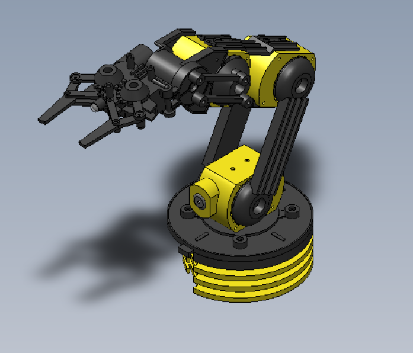

Explorando su funcionamiento, especificaciones técnicas y manual de armado paso a paso

¿Qué es el brazo robótico?
El brazo robótico de Steren es un kit educativo diseñado para enseñar principios básicos de robótica, mecánica y electrónica. Funciona con motores de corriente directa y permite controlar su movimiento con un control remoto de palancas.
Movimientos en el Plano Cartesiano
El brazo robótico opera en un espacio tridimensional (ejes X, Y, Z):
Movimiento en X: Giro de la base (izquierda/derecha).
Movimiento en Y: Subida y bajada del brazo principal.
Movimiento en Z: Extensión o retracción del brazo o pinza.
Grados de Libertad
El brazo tiene 5 grados de libertad:
Rotación de la base
Movimiento del hombro
Movimiento del codo
Giro de la muñeca
Apertura/cierre de la pinza
Ángulos de Movimiento
Base: 270°
Hombro: 180°
Codo: 180°
Muñeca: 180°
Pinza: Apertura de hasta 4.5 cm
Peso Soportado
Capacidad máxima de carga: 100 gramos. Superar este límite puede dañar los motores.
Alimentación
Usa 4 pilas tipo D (1.5V)
Compartimento de pilas ubicado en la base
Recomendación: usar pilas alcalinas
Tarjeta de direccionamiento
Distribuye y controla la energía hacia los motores. Protege contra sobrecargas y regula dirección y encendido.
Funciones: Control y protección
Interfaz: Recibe señales del control remoto
Diseño: Didáctico y seguro
¿Cómo se arma? - Manual
Paso 1:
Clasifica piezas y herramientas
Paso 2:
Ensambla la base
Paso 3:
Arma las secciones del brazo
Paso 4:
Coloca los motores
Paso 5:
Conecta los cables
Paso 6:
Ensambla la pinza
Paso 7:
Realiza pruebas de funcionamiento
Aplicaciones del Brazo Robótico
Este brazo no solo es una herramienta educativa, también ayuda a comprender:
Fundamentos de la automatización
Sistemas mecatrónicos
La programación de movimientos en robótica
La relación entre teoría (física/mecánica) y práctica
Ideal para estudiantes STEAM que quieren experimentar con robótica real a bajo costo.
Este brazo hidráulico está hecho de madera y utiliza jeringas con agua para simular los movimientos de un brazo robótico. Es un proyecto educativo que enseña principios de la hidráulica, la física y la mecánica.
Principio de Funcionamiento
Se basa en el principio de Pascal: cuando se aplica presión en un líquido confinado, esta se transmite por igual en todas las direcciones. Al accionar las jeringas, se genera movimiento en diferentes secciones del brazo.
Movimientos y Grados de Libertad
Base: Giro manual
Hombro: Elevación por presión hidráulica
Codo: Flexión por jeringa conectada
Muñeca: Movimiento hacia adelante y atrás
Pinza: Apertura y cierre mediante jeringas opuestas
Materiales Requeridos
Madera cortada (o MDF)
6 jeringas de 10 ml o más
Mangueras plásticas delgadas
Agua con colorante (opcional)
Silicón o pegamento caliente
Palitos de madera y tornillos pequeños
¿Cómo se arma? - Manual
Paso 1:
Clasifica las piezas de madera y verifica las jeringas
Paso 2:
Ensambla la base y la estructura con tornillos
Paso 3:
Coloca las jeringas en las articulaciones
Paso 4:
Llena las jeringas con agua y elimina el aire
Paso 5:
Conecta las mangueras entre pares de jeringas
Paso 6:
Verifica el movimiento de cada sección
Paso 7:
Ajusta y realiza pruebas de control hidráulico
Aplicaciones Educativas
Este brazo hidráulico es ideal para aprender:
Principios de la hidráulica y presión
Diseño mecánico con materiales accesibles
Trabajo en equipo y prototipado
Aplicaciones reales en robótica e ingeniería
Excelente proyecto STEAM para estudiantes de primaria y secundaria.